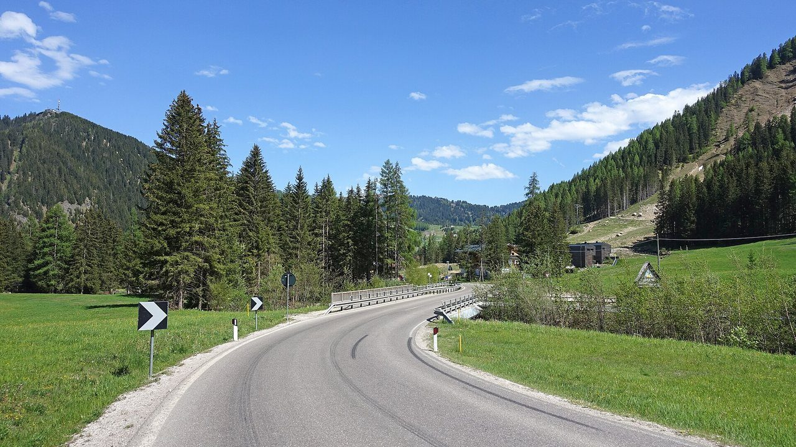

Race, Passo Campolongo

Behind
Best +0:01
371W
Target 418 W-47 W
- Cadence
- 87rpm
- Heart
- 140bpm
- Speed
- 26.5km/h
Work3 of 11
0:47
Next: · 1:47 at level 19
+5.4%
99 m climbed
2.16 km
22
Resistance / 32
Solo races your best-time ghost: position reads Ahead or Behind, and solo alone gets a Pause button. Frozen at 5:36.